19. Peniaze, banky a menová politika#
19.1. Peniaze#
Peniaze sú osobitným druhom aktíva, ktoré slúži predovšetkým ako médium výmeny. Umožňujú uskutočňovať obchod bez potreby priamej výmeny tovaru za tovar a výrazne znižujú transakčné náklady v ekonomike. Okrem toho plnia aj funkciu účtovnej jednotky, v ktorej sa vyjadrujú ceny, a funkciu uchovávateľa hodnoty, pretože umožňujú prenášať kúpnu silu do budúcnosti.
V minulosti boli peniaze často kryté komoditami, najmä zlatom alebo striebrom. Hodnota peňazí preto vyplývala zo schopnosti ich emitenta vymeniť ich za určitú hodnotu drahého kovu. Moderné ekonomiky však používajú prevažne nekryté (fiat) peniaze, ktorých hodnota je založená na dôvere verejnosti v menový systém a menovú autoritu.
V súčasných ekonomikách sa peniaze dostávajú do obehu najmä prostredníctvom úverov. Dôležitú úlohu zohrávajú centrálne banky, napríklad Európska centrálna banka (ECB), Federálny rezervný systém Spojených štátov (FED) alebo Česká národná banka (ČNB). Centrálna banka môže zvýšiť množstvo peňazí v ekonomike napríklad nákupom vládnych dlhopisov. Za nakúpené dlhopisy zaplatí novovytvorenými peniazmi, čím zvýši objem peňažných prostriedkov v bankovom systéme.
Keďže peniaze existujú v rôznych podobách, centrálne banky sledujú ich množstvo pomocou peňažných agregátov. Jednotlivé agregáty sa líšia mierou likvidity aktív, ktoré zahŕňajú.
Najčastejšie používané peňažné agregáty sú:
obeživo držané verejnosťou, ktoré zahŕňa bankovky a mince mimo bánk,
menová báza (M0), ktorá pozostáva z obeživa a rezerv komerčných bánk v centrálnej banke,
M1, zahŕňajúca obeživo a vklady splatné na požiadanie,
M2, ktorá okrem agregátu M1 obsahuje aj krátkodobé termínované vklady,
M3, najširší bežne používaný peňažný agregát, zahŕňajúci M2 a ďalšie vysoko likvidné finančné aktíva.
Pri analýze menovej politiky sa v eurozóne najčastejšie používa agregát M3, pretože poskytuje najširší pohľad na množstvo peňazí dostupných v ekonomike. Naopak agregát M1 zachytáva najlikvidnejšie formy peňazí a býva citlivejší na hospodársky cyklus a zmeny menovej politiky.
Informácie o peňažných agregátoch pravidelne zverejňujú centrálne banky.
19.2. Reálne a nominálne premenné#
Peňažné agregáty sa zvyčajne merajú v nominálnych jednotkách. Doteraz sme analyzovali reálne ekonomické modely, v ktorých spotrebný statok plnil nielen úlohu predmetu spotreby, ale aj média výmeny.
Rozšírenie modelu o peniaze vyžaduje rozlíšenie medzi reálnymi a nominálnymi premennými. Ich vzťah sprostredkúva cenová hladina alebo cena spotrebného statku \(P\). Ak je reálna hodnota premennej označená symbolom \(X\), jej nominálnu hodnotu získame vynásobením cenovou hladinou \(PX\).
Všeobecná spotrebná cenová hladina sa v praxi meria cenovými indexmi Cenové indexy.
Hrubá reálna úroková miera je
kde \(R\) je nominálna úroková miera a \(i\) je miera inflácie
Vzťah (19.1) sa označuje ako Fisherova rovnica. Vyjadruje, že nominálna úroková miera pozostáva z reálnej úrokovej miery a kompenzácie za infláciu.
Pri nízkych hodnotách inflácie a úrokových mier možno Fisherovu rovnicu aproximovať v tvare
Nominálny životný rozpočet spotrebiteľa
V modeloch prídelovej a výrobnej ekonomiky sme doteraz predpokladali, že cena spotrebného statku sa medzi obdobiami nemení a platí \(P=P'\). Preskúmajme životný rozpočet spotrebiteľa v prídelovej ekonomike, ak cena nie je konštantná a \(P\neq P'\).
Podiel cien v druhom a prvom období predstavuje hrubý inflačný faktor,
Spotrebiteľov rozpočet v prvom období je
Z nominálneho rozpočtového ohraničenia získame reálne (8.5), ak ho podelíme cenou \(P\).
Označme nominálnu úrokovú mieru, za ktorú sa úspory zhodnocujú medzi obdobiami, symbolom \(R\). Spotrebiteľov rozpočet v druhom období je
Po vydelení druhého rozpočtu cenou \(P'\) získame
Posledný člen predstavuje reálnu hodnotu úspor po ich nominálnom zhodnotení a očistení o infláciu. Ak označíme reálnu úrokovú mieru symbolom \(r\), musí platiť
Po úprave získame
V reálnom rozpočtovom ohraničení v druhom období (8.6) sú úspory zhodnotené reálnou úrokovou mierou \(r\).
V reálnych dynamických modeloch má dynamický substitučný efekt a príjmový efekt reálna úroková miera \(r\), nie nominálna úroková miera \(R\). O rozhodnutiach spotrebiteľa totiž rozhoduje množstvo statkov, ktoré si bude môcť kúpiť v budúcnosti, a nie počet peňažných jednotiek, ktoré získa.
Aká je úroková miera obeživa? Ak držíme hotovosť v peňaženke, nezískavame žiadny úrok. Peniaze nie sú úročeným aktívom. Nominálna úroková miera peňazí sa rovná nule.
Aká je však reálna úroková miera z držby peňazí?
Dosadením \(R=0\) do Fisherovej rovnice získame
resp.
Ak je miera inflácie kladná, reálna úroková miera peňazí je záporná.
Držba peňazí je preto spojená s príležitostnými nákladmi. Ak namiesto nákupu úročených aktív držíme úspory vo forme obeživa, ich kúpna sila v dôsledku inflácie klesá. Čím vyššia je inflácia, tým vyššie sú príležitostné náklady držby peňazí.
19.3. Menové ukazovatele v eurozóne#
Slovensko nemá vlastnú menovú politiku od vstupu do Európskej menovej únie (EMÚ) v roku 2009. Preto sa z hľadiska peňazí a menovej analýzy zameriame na ekonomiku EMÚ. Geograficky sa krajinám v EMÚ hovorí aj eurozóna.
Historický vývoj slovenskej ekonomiky bol poznačený veľkými udalosťami, z ktorých vznikli recesie. Preto ešte pred predstavením menových ukazovateľov priblížime recesie (Recesia) v ekonomike EMÚ. Vužívame časové rady z Eurostatu [Eurostat26].
19.3.1. Recesie v ekonomike EMÚ#
Recesia |
Vrchol |
Dno |
|---|---|---|
Globálna “dot-com” kríza |
2002Q4 |
2003Q1 |
Globálna finančná kríza |
2008Q1 |
2009Q1 |
Európska dlhová kríza |
2011Q2 |
2013Q1 |
Pandémia COVID-19 |
2019Q2 |
2020Q1 |
Energetická kríza |
2022Q2 |
2023Q1 |
Zdroj: vlastné spracovanie na základe údajov Eurostatu.
Porovnaním recesií v ekonomike EMÚ v Tab. 19.1 a slovenských recesií v Tab. 13.1 nájdeme mnoho podobností, ale aj rozdielov. V oboch ekonomikách sme zaznamenali globálnu finančnú krízu, pandémiu COVID-19 a energetickú krízu.
Slovenská ekonomika zvykne reagovať s omeškaním na hospodársky vývoj v eurozóne, čo súvisí s jej vysokou otvorenosťou a závislosťou od zahraničného dopytu.
Stalo sa tak pri globálnej finančnej kríze, ktorá na Slovensku prepukla s približne polročným omeškaním. Aj táto skutočnosť je indíciou, že slovenská ekonomika si krízu doviezla v podobe obchodného šoku.
Zaujímavé je, že podľa identifikácie hospodárskeho cyklu sa recesia v EMÚ začala ešte pred vypuknutím pandémie COVID‑19. To naznačuje, že hospodársky rast v eurozóne sa spomaľoval už pred pandémiou a pandémia následný pokles ekonomickej aktivity výrazne prehĺbila.
Jedine pri energetickej kríze slovenská ekonomika predbehla ekonomiku EMÚ. Podľa údajov v slovenskej ekonomike kríza skončila práve v období, keď sa začala v EMÚ.
Prvou bola takzvaná dot-com kríza. Koncom 90. rokov boli s rozvojom internetu spojené veľmi optimistické očakávania budúceho hospodárskeho rastu. Investori očakávali, že nové internetové technológie výrazne zvýšia produktivitu práce a kapitálu. Mnohé projekty však tieto očakávania nenaplnili a po precitnutí investorov nasledoval pokles cien technologických akcií a hospodárske spomalenie.
Z pohľadu modelu výrobnej ekonomiky možno dot-com krízu interpretovať ako dôsledok príliš optimistických očakávaní budúceho rastu celkovej produktivity faktorov (Vplyv očakávaného zvýšenia budúcej celkovej produktivity faktorov). Po prehodnotení týchto očakávaní sa znížil investičný dopyt a spomalil hospodársky rast.
Druhou recesiou bola európska dlhová kríza. Po globálnej finančnej kríze sa investori začali viac obávať schopnosti niektorých krajín eurozóny splácať svoje záväzky. Týkalo sa to najmä Grécka, ale aj ďalších krajín južnej Európy. V dôsledku toho sa zvýšili úrokové prirážky, za ktoré si tieto krajiny mohli požičiavať na finančných trhoch.
Tento vývoj možno interpretovať pomocou modelu otvorenej ekonomiky s úrokovou prirážkou (Vplyv zvýšenia úrokovej prirážky spôsobenej nedokonalosťami na trhu dlhopisov (finančný šok)). Vyššia úroková prirážka zvyšuje náklady financovania dlhu a znižuje životné bohatstvo ekonomických subjektov. Spotrebitelia obmedzujú spotrebu a firmy investície, čo vedie k poklesu ekonomickej aktivity a životnej úrovne.
Európsku dlhovú krízu tak možno interpretovať ako príklad finančného šoku spojeného s asymetrickými informáciami a nedôverou investorov na finančných trhoch.
Skutočnosť, že slovenské údaje neidentifikovali dot-com krízu ani európsku dlhovú krízu, môže súvisieť s procesom ekonomickej konvergencie. Rýchly rast produktivity, investícií a zamestnanosti mohol čiastočne kompenzovať negatívne šoky, ktoré viedli k recesiám v eurozóne. Hospodársky cyklus Slovenska sa preto mohol od hospodárskeho cyklu EMÚ do istej miery odlišovať.
Recesie ekonomiky EMÚ budeme zvýrazňovať v zodpovedajúcich grafoch časových radov.
19.3.2. HDP v ekonomike EMÚ#
Priebeh sezónne očistenéhou časového radu reálneho HDP získaného z Eurostatu v ekonomike EMÚ je na Obr. 19.1.

Obr. 19.1 Priebeh reálneho HDP v ekonomike EMÚ#
Zdroj: vlastné spracovanie na základe údajov Eurostatu.
Rovnako ako v slovenskej ekonomike, aj v ekonomike EMÚ predchádzalo globálnej finančnej kríze obdobie rýchleho hospodárskeho rastu, ktoré sa následne korigovalo recesiou. Naopak, pandémia COVID‑19 spôsobila krátky, ale mimoriadne prudký pokles ekonomickej aktivity. Po odznení pandémie sa ekonomika EMÚ pomerne rýchlo vrátila k predchádzajúcemu rastovému trendu.
19.3.3. Peňažné agregáty#
Na Obr. 19.2 je zobrazený priebeh menových agregátov M_1 a M_3. Údaje sú získané z databázového portálu Európskej centrálnej banky (ECB) [ECB26].
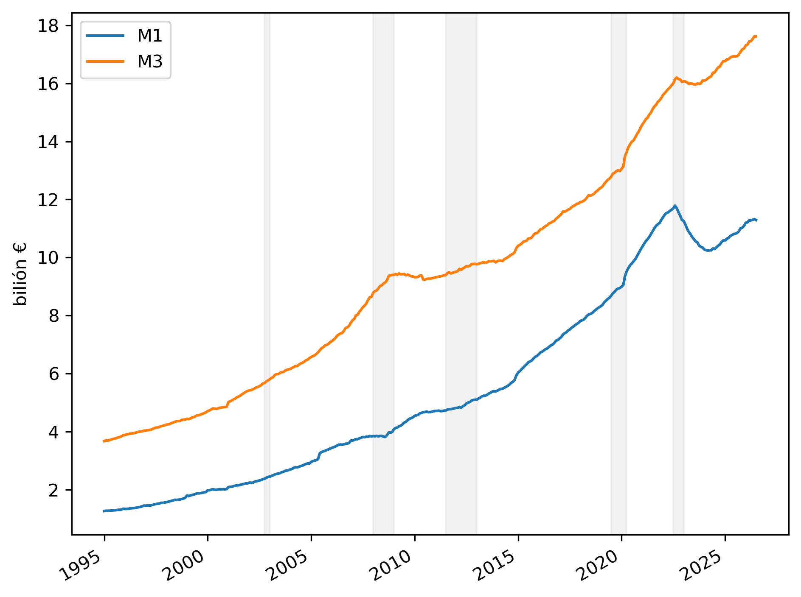
Obr. 19.2 Priebeh menových agregátov M_1 a M_3#
Zdroj: vlastné spracovanie na základe údajov ECB.
Na Obr. 19.2 vidíme, že oba peňažné agregáty v eurozóne dlhodobo rastú. Agregát M3 je počas celého sledovaného obdobia väčší ako agregát M1, pretože okrem najlikvidnejších foriem peňazí zahŕňa aj ďalšie krátkodobé finančné aktíva.
Z grafu je tiež zrejmé, že agregát M1 reaguje na ekonomické udalosti výraznejšie ako agregát M3. Po pandémii COVID‑19 prudko vzrástol a priblížil sa k agregátu M3.
K tomuto vývoju prispeli mimoriadne expanzívna menová politika ECB, nízke úrokové miery a rozsiahle podporné programy zavedené počas pandémie. Po roku 2022 sa rast agregátu M1 spomalil a časť prostriedkov sa presunula do menej likvidných foriem úspor, čo súviselo so sprísňovaním menovej politiky ECB.
Pre ďalšiu analýzu je dôležité, že centrálne banky zvyčajne sledujú nielen celkové množstvo peňazí v ekonomike, ale aj ich štruktúru.
19.3.4. Ceny a miera inflácie v ekonomike EMÚ#
Na Obr. 19.3 je zobrazený harmonizovaný index spotrebiteľských cien (HICP) v ekonomike EMÚ a na Obr. 19.4 medziročná miera inflácie meraná týmto indexom. Oba časové rady sú sezónne očistené a pochádzajú z databázy Eurostatu.

Obr. 19.3 Harmonizovaný index cien v ekonomike EMÚ#
Zdroj: vlastné spracovanie na základe údajov Eurostatu.

Obr. 19.4 Miera inflácie v ekonomike EMÚ#
Zdroj: vlastné spracovanie na základe údajov Eurostatu.
Cenová hladina v ekonomike EMÚ počas celého sledovaného obdobia dlhodobo rástla. Zatiaľ čo krátkodobé hospodárske výkyvy ovplyvňovali tempo rastu cien, samotný index HICP vykazuje stabilný rastúci trend. Výraznejšie zrýchlenie rastu cenovej hladiny nastalo po pandémii COVID‑19 a energetickej kríze rokov 2021 až 2023.
Miera inflácie sa na rozdiel od cenovej hladiny vyznačuje podstatne vyššou volatilitou. Počas väčšiny sledovaného obdobia sa inflácia pohybovala v blízkosti inflačného cieľa ECB na úrovni približne 2 %. Po globálnej finančnej kríze a počas dlhovej krízy v eurozóne inflácia výrazne poklesla a v niektorých obdobiach sa priblížila k nule alebo bola záporná. Naopak, v rokoch 2022 a 2023 dosiahla najvyššie hodnoty od vzniku eurozóny, keď medziročne prekročila 10 %. Následne sa inflácia postupne znížila, avšak zostala nad úrovňami typickými pre obdobie pred pandémiou.
19.3.5. Fisherov vzťah, Fisherov efekt a reálna úroková miera v ekonomike EMÚ#
Fisherov vzťah je definícia vyjadrená Fisherovou rovnicou (19.1). Mnohí ekonómovia však upozorňujú aj na empirické pozorovanie označované ako Fisherov efekt.
- Fisherov efekt
empirická tendencia nominálnych úrokových mier rásť spolu s očakávanou infláciou; vyplýva z Fisherovej rovnice
Fisherov efekt ilustruje Obr. 19.5, v ktorom je zobrazený priebeh miery inflácie a nominálnej úrokovej miery. Nominálnu úrokovú mieru predstavuje časový rad trojmesačnej medzibankovej úrokovej sadzby EURIBOR (EURIBOR3M). Obidva časové rady pochádzajú z databázy Eurostatu.
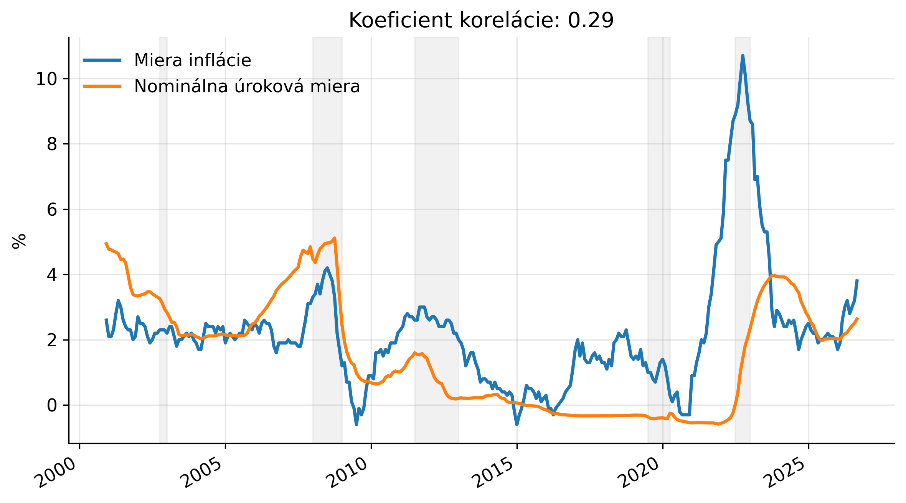
Obr. 19.5 Miera inflácie a nominálna úroková miera v ekonomike EMÚ#
Zdroj: vlastné spracovanie na základe údajov Eurostatu.
Z grafu možno pozorovať, že obdobia vyššej inflácie bývajú spravidla sprevádzané vyššími nominálnymi úrokovými mierami. Vzťah však nie je dokonalý. Nominálne úrokové miery sú ovplyvnené aj menovou politikou ECB, ktorá na zmeny inflácie reaguje s určitým oneskorením. Počas inflačnej vlny rokov 2021 až 2023 inflácia vzrástla skôr, zatiaľ čo úrokové miery začali výraznejšie rásť až následne. Napriek týmto krátkodobým odchýlkam časové rady naznačujú pozitívny dlhodobý vzťah medzi infláciou a nominálnou úrokovou mierou, ktorý je v súlade s Fisherovým efektom.
Na {numref}graf_r je zobrazená reálna úroková miera vypočítaná pomocou aproximovanej Fisherovej rovnice ako rozdiel medzi nominálnou úrokovou mierou a mierou inflácie.
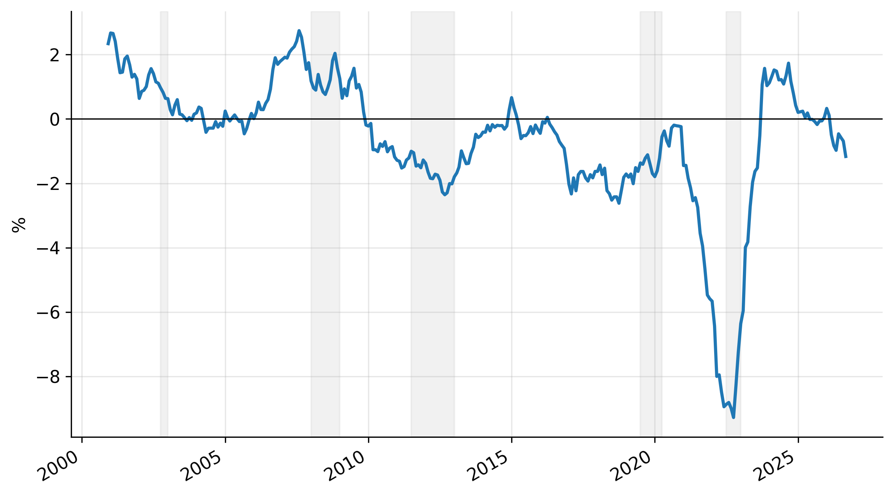
Obr. 19.6 Reálna úroková miera v ekonomike EMÚ#
Zdroj: vlastné spracovanie na základe údajov Eurostatu.
Z Obr. 19.6 vidno, že reálna úroková miera v ekonomike EMÚ nie je konštantná. V priebehu sledovaného obdobia nadobúdala kladné aj záporné hodnoty v závislosti od vzájomného vývoja nominálnej úrokovej miery a inflácie.
Počas väčšiny prvého desaťročia 21. storočia bola reálna úroková miera prevažne kladná, čo znamenalo, že výnos z úspor prevyšoval rast cenovej hladiny. Naopak, v období po globálnej finančnej kríze a najmä počas rokov 2021 až 2023 dosahovala výrazne záporné hodnoty. Dôvodom bol rýchly rast inflácie, na ktorý nominálne úrokové miery reagovali len s oneskorením.
Záporná reálna úroková miera znižuje motiváciu domácností držať finančné úspory a súčasne znižuje reálnu hodnotu existujúcich dlhov. Naopak, kladná reálna úroková miera motivuje k sporeniu a zvyšuje náklady financovania investícií prostredníctvom úverov.
Najhlbší pokles reálnej úrokovej miery nastal počas inflačnej vlny rokov 2022 a 2023, keď rast cien výrazne prevýšil nominálne úrokové miery. V tomto období dosahovala reálna úroková miera približne −9 %.
Záporné úrokové miery
Od konca 20. storočia možno vo vyspelých ekonomikách pozorovať dlhodobý pokles reálnych úrokových mier. Ekonomická teória tento vývoj vysvetľuje najmä starnutím populácie a rastom úspor domácností, spomalením rastu produktivity a dopytu po investíciách, ako aj zvýšeným dopytom po bezpečných finančných aktívach [Ber05, RS19]. Výsledkom je pokles rovnovážnej reálnej úrokovej miery, pri ktorej sa vyrovnáva ponuka úspor a dopyt po investíciách.
19.3.6. Cyklické charakteristiky peňazí, cien a inflácie#
Na Obr. 19.7, Obr. 19.8 a Obr. 19.9 sú porovnané cyklické zložky peňažného agregátu M1, harmonizovaného indexu spotrebiteľských cien (HICP) a miery inflácie s cyklickou zložkou reálneho HDP. Cyklické zložky boli získané odstránením log-kvadratického trendu, resp. kvadratického trendu v prípade miery inflácie. Výsledky analýzy sú zhrnuté v tabuľke Obr. 19.10.
Z hľadiska korelácie s hospodárskym cyklom možno M1 považovať za acyklický.
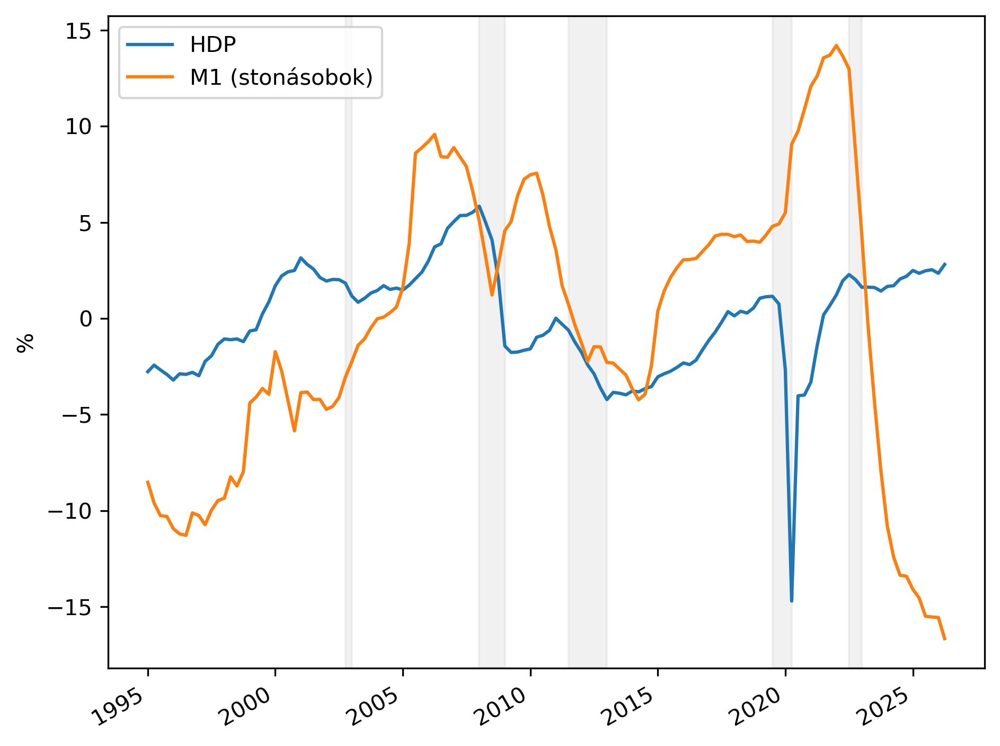
Obr. 19.7 Cyklické zložky M1 a HDP v ekonomike EMÚ#
Zdroj vlastné spracovanie na základe údajov Eurostatu a ECB
Na rozdiel od slovenskej ekonomiky sú cenová hladina aj miera inflácie v ekonomike EMÚ mierne procyklické a oneskorené premenné. Počas expanzie ekonomickej aktivity majú tendenciu rásť, pričom na zmeny hospodárskeho cyklu reagujú s určitým časovým oneskorením.
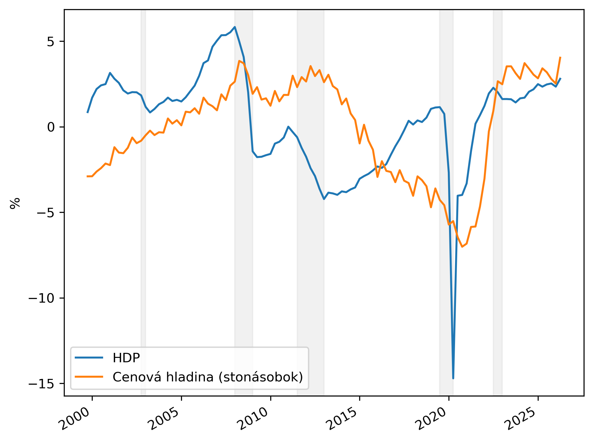
Obr. 19.8 Cyklické zložky HICP a HDP v ekonomike EMÚ#
Zdroj: vlastné spracovanie na základe údajov Eurostatu.
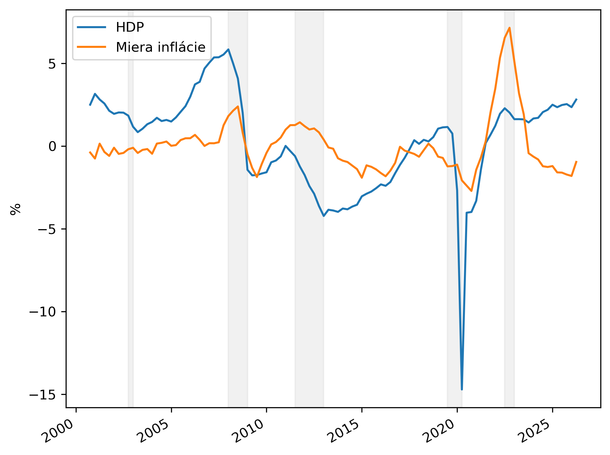
Obr. 19.9 Cyklické zložky miery inflácie a HDP v ekonomike EMÚ#
Zdroj: vlastné spracovanie na základe údajov Eurostatu.
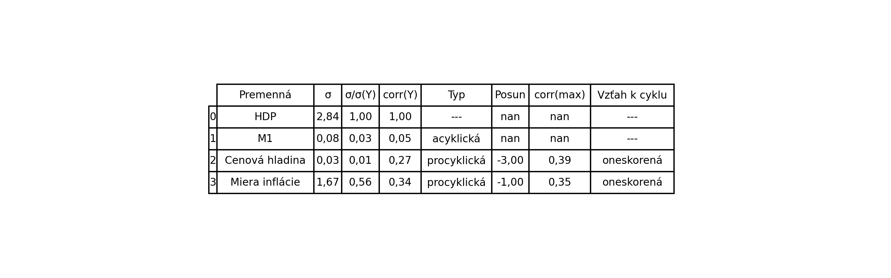
Obr. 19.10 Cyklické zložky menových ukazovateľov v ekonomike EMÚ#
Zdroj: vlastné spracovanie na základe údajov Eurostatu.
Volatilita HDP v slovenskej ekonomike a v ekonomike EMÚ
Ak porovnáme volatilitu slovneského HDP Obr. 13.23 a HDP v ekonomike EMÚ Obr. 19.10, cyklická zložka reálneho HDP Slovenska vykazuje vyššiu volatilitu než v eurozóne, čo dokumentuje aj vyššia štandardná odchýlka cyklických výkyvov. Vyššia volatilita je typickou charakteristikou malých otvorených ekonomík, v ktorých majú externé Obchodné šoky a finančné šoky (Vplyv zvýšenia úrokovej prirážky spôsobenej nedokonalosťami na trhu dlhopisov (finančný šok)) výraznejší dopad na ekonomickú aktivitu.
V ďalšej časti rozšírime model výrobnej ekonomiky o peniaze.
19.4. Dopyt a ponuka peňazí#
- Trh peňazí
trh, na ktorom sa stretáva dopyt po peniazoch s ich ponukou.
Podobne ako spotrebné statky, práca alebo dlhopisy, aj peniaze predstavujú ekonomické dobro, po ktorom existuje dopyt a ktoré má svoju ponuku. Preto môžeme uvažovať o trhu peňazí.
V najjednoduchšej verzii modelu budeme peniaze stotožňovať s obeživom držaným verejnosťou. Obeživo držané komerčnými bankami vo forme rezerv do peňažnej zásoby nezahŕňame.
- Dopyt po peniazoch
množstvo peňazí, ktoré chcú domácnosti a firmy držať pri danej úrokovej miere a úrovni ekonomickej aktivity.
- Ponuka peňazí
množstvo peňazí v obehu vytvorené centrálnou bankou.
Centrálna banka môže zvýšiť množstvo peňazí v obehu napríklad nákupom dlhopisov od verejnosti. Predávajúci získa nové peniaze a množstvo obeživa v ekonomike sa zvýši.
Banky
umožňujú realizáciu platieb a prevodov medzi domácnosťami, firmami a vládou,
pôsobia ako finanční sprostredkovatelia medzi sporiteľmi a dlžníkmi.
V tejto kapitole budeme banky uvažovať predovšetkým ako inštitúcie zabezpečujúce platobný styk. Ich úlohu finančných sprostredkovateľov zanedbáme a vrátime sa k nej v neskorších kapitolách.
19.4.1. Dopyt po peniazoch#
Dopyt po peniazoch možno chápať ako rozhodnutie, akú časť majetku budú ekonomické subjekty držať vo forme okamžite použiteľného platidla a akú časť vo forme úročených aktív.
Držba obeživa je spojená s nákladom obetovanej príležitosti. Ak spotrebiteľ drží časť svojho majetku vo forme peňazí, vzdáva sa výnosu, ktorý by mohol získať držbou úročených aktív. Preto dopyt po peniazoch závisí od nominálnej úrokovej miery \(R\), a nie od reálnej úrokovej miery \(r\).
Dopyt po peniazoch ovplyvňujú najmä:
nominálna úroková miera \(R\),
príjem (výstup ekonomiky) \(Y\),
možnosti realizácie platieb a transakčné náklady.
Čím vyššia je nominálna úroková miera, tým vyššie sú náklady držby peňazí a tým nižší je dopyt po peniazoch. Naopak, čím vyšší je príjem, tým viac transakcií ekonomické subjekty realizujú a tým vyšší je ich dopyt po peniazoch.
V odvodení dopytu po peniazoch rozlišujeme:
špekulačný dopyt, ktorý negatívne závisí od nominálnej úrokovej miery \(R\),
transakčný dopyt, ktorý pozitívne závisí od dôchodku \(Y\).
Dopyt po reálnych peňažných zostatkoch zapíšeme v tvare
kde \(M^d\) označuje nominálny dopyt po peniazoch, \(P\) cenovú hladinu a \(L(Y,R)\) funkciu dopytu po reálnych peňažných zostatkoch.
O funkcii \(L(Y,R)\) platí
Po vynásobení cenovou hladinou získame nominálny dopyt po peniazoch
Najskôr budeme predpokladať konštantnú infláciu. Pre zjednodušenie nech \(i=0\), takže platí
Cenová elasticita dopytu po peniazoch sa rovná \(1\). Jednopercentnému rastu cenovej hladiny zodpovedá jednopercentný rast nominálneho dopytu po peniazoch a naopak.
Na Obr. 19.11 je zobrazená funkcia dopytu po peniazoch v priestore \([M^d,P]\). Pri danom výstupe \(Y\) a úrokovej miere \(r\) je nominálny dopyt po peniazoch priamo úmerný cenovej hladine.
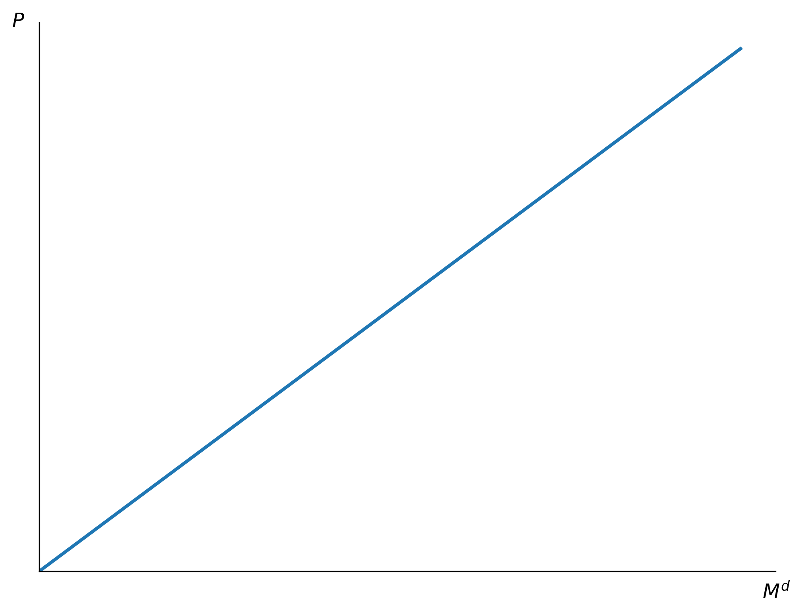
Obr. 19.11 Funkcia dopytu po peniazoch#
Dopyt po peniazoch sa zvýši:
rastom príjmu \(Y\),
poklesom úrokovej miery \(r\).
Rozvoj platobných technológií, elektronických platieb a ďalších bezhotovostných foriem platenia znižuje potrebu držby obeživa, a teda aj dopyt po peniazoch.
Na Obr. 19.12 je zobrazený posun funkcie dopytu po peniazoch z \(M^d_1(Y_1,r_1)\) na \(M^d_2(Y_2,r_2)\) smerom doprava. K zvýšeniu dopytu po peniazoch môže dôjsť v dôsledku rastu výstupu z \(Y_1\) na \(Y_2\), poklesu reálnej úrokovej miery z \(r_1\) na \(r_2\) alebo zhoršenia platobných technológií, ktoré zvyšujú preferenciu držby obeživa.
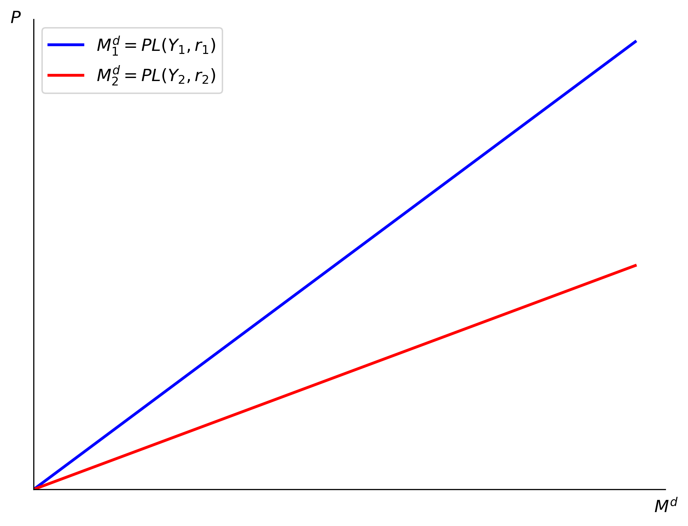
Obr. 19.12 Posuny funkcie dopytu po peniazoch#
V ďalšom texte budeme pod peniazmi rozumieť obeživo držané verejnosťou. Neskôr model rozšírime o bankové vklady a širšie peňažné agregáty.
19.4.2. Vláda a ponuka peňazí#
Vláda v širšom zmysle slova zahŕňa:
vládu, ktorá realizuje fiškálnu politiku,
centrálnu banku, ktorá realizuje menovú politiku.
Nominálny rozpočet verejného sektora v prvom období môžeme zapísať v tvare
kde ľavá strana predstavuje výdavky a pravá strana príjmy verejného sektora.
Príjmami verejného sektora sú:
nominálne čisté daňové príjmy \(PT\),
emisia nových dlhopisov \(B\),
emisia nových peňazí \(M-M_0\).
Výdavkami verejného sektora sú:
splatenie zdedeného verejného dlhu vrátane úrokov \((1+R_0)B_0\),
nominálne nákupy statkov a služieb \(PG\).
V našom modeli predpokladáme, že množstvo peňazí v obehu určuje centrálna banka. Zvýšenie peňažnej zásoby môže dosiahnuť napríklad nákupom dlhopisov od verejnosti. Predávajúci za dlhopisy získa nové peniaze a množstvo peňazí v obehu sa zvýši.
- Ponuka peňazí
množstvo peňazí vytvorené a uvedené do obehu centrálnou bankou.
Pre zjednodušenie budeme najskôr predpokladať, že ponuka peňazí je exogénna premenná určená menovou politikou:
19.5. Konkurenčná rovnováha v ekonomike s peniazmi#
Pri danej spotrebe vlády \(\{G,G'\}\), technológii firmy \(\{A,A'\}\) a ponuke peňazí \(\{M,M'\}\) je konkurenčnou rovnováhou taká alokácia spotrebiteľa
alokácia firmy
a množina cien
že
spotrebiteľ rieši úlohu maximalizovať funkciu užitočnosti (17.1) vzhľadom na životný rozpočet (17.4),
vláda spĺňa svoj rozpočet v oboch obdobiach,
trh práce je v rovnováhe
trh produktov je v rovnováhe
trh peňazí je v rovnováhe
19.5.1. Grafická interpretácia#
Na Obr. 19.13 je zobrazená rovnováha na trhu peňazí. Dopyt po peniazoch je znázornený zelenou rastúcou krivkou \(M^d\), ktorá je rovnaká ako na Obr. 19.11. Ponuka peňazí je zobrazená zvislou modrou čiarou \(M^*=M^s\), pretože množstvo peňazí je určené centrálnou bankou.
Priesečník kriviek dopytu a ponuky určuje rovnováhu na trhu peňazí. Pri danej ponuke peňazí \(M^s\), výstupe \(Y\) a reálnej úrokovej miere \(r\) rovnováha určuje cenovú hladinu \(P^*\).
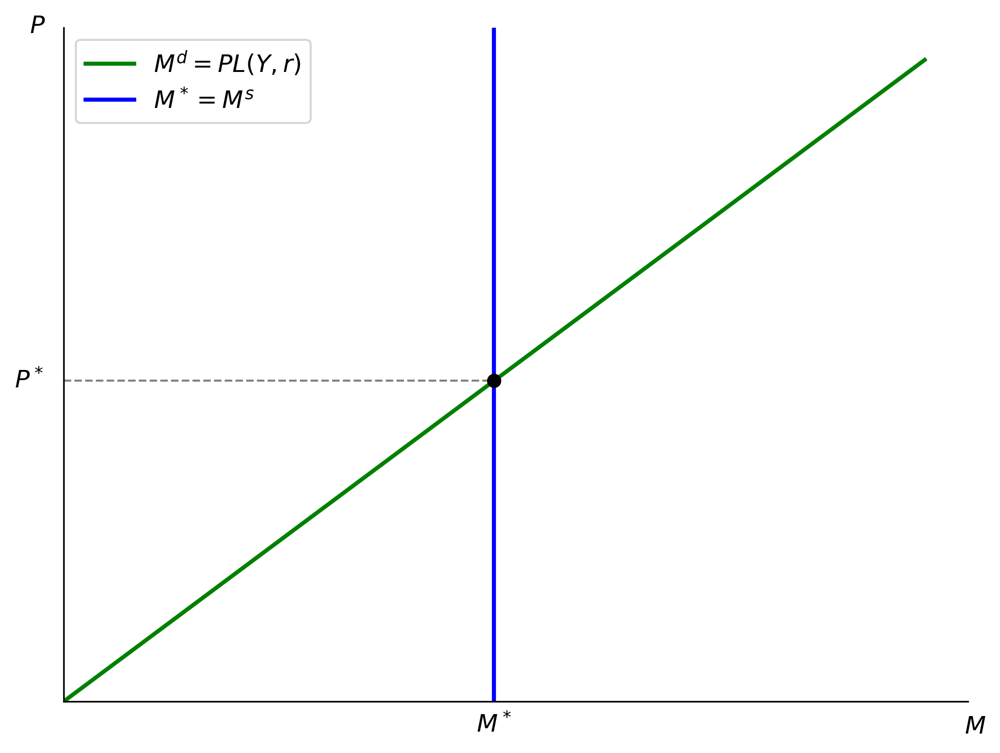
Obr. 19.13 Rovnováha na trhu peňazí#
Na Obr. 19.14 je zobrazená konkurenčná rovnováha v ekonomike s peniazmi. Obrázok je rozdelený do troch panelov. Horné dva panely zobrazujú konkurenčnú rovnováhu výrobnej ekonomiky, pozostávajúcu z rovnováhy na trhu práce (ľavý horný panel) a na trhu výstupu (pravý horný panel). Rovnováha na trhu peňazí je zobrazená v dolnom paneli. Na každom grafe je ponuka znázornená modrou krivkou a dopyt zelenou krivkou.
Na trhu výstupu sa dopyt rovná ponuke, \(Y^d=Y^s\), čím je určená rovnovážna dvojica výstupu a reálnej úrokovej miery \([Y^*,r^*]\). Rovnovážna reálna úroková miera \(r^*\) následne určuje polohu krivky ponuky práce \(N^s(r^*)\). Spolu s dopytom po práci tak vzniká rovnovážna dvojica práce a reálnej mzdy \([N^*,w^*]\).
Rovnovážne hodnoty \(Y^*\) a \(r^*\) zároveň určujú dopyt po peniazoch
Rovnováha na trhu peňazí nastáva pri splnení podmienky
Pri danej ponuke peňazí \(M^s\) priesečník dopytu a ponuky peňazí určuje rovnovážnu cenovú hladinu \(P^*\).
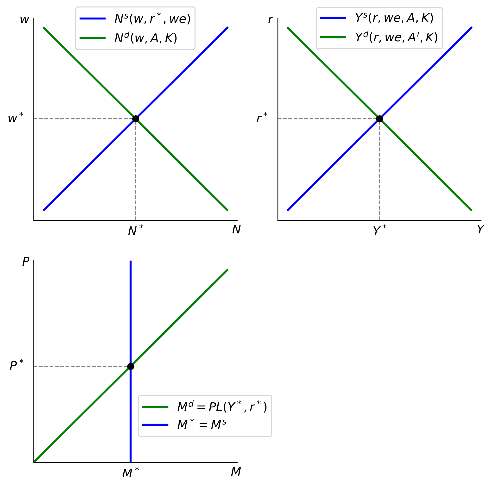
Obr. 19.14 Konkurenčná rovnováha#
V komparatívnej statike sa zameriame na efekt zmien ponuky dopytu peňazí.
19.6. Vplyv zvýšenia množstva peňazí#
Vláda má využitím centrálnych bánk moc ovplyvňovať množstvo peňazí v hospodárstve.
Predpokladajme, že peňažná zásoba bola pôvodne konštantná na úrovni \(M_1\) a ekonomické subjekty očakávali, že zostane nezmenená aj v budúcnosti. V prítomnom období však centrálna banka jednorazovo zvýši množstvo peňazí na úroveň \(M_2>M_1\).
V rozpočtovom ohraničení vlády (19.4)
sa preto emisný príjem zvýši z nuly na
Rozpočtové ohraničenie vlády (19.4) sa musí naďalej spĺňať. Keďže zvýšenie množstva peňazí nebolo vopred očakávané, zdedené hodnoty úrokovej miery a verejného dlhu \(R_0\) a \(B_{v0}\) zostávajú nezmenené. Zmena množstva peňazí preto ovplyvní jednu alebo viac zo zostávajúcich premenných rozpočtového ohraničenia.
Uvažujme o nasledujúcich možnostiach:
Vláda zníži čisté daňové príjmy \(T\). Pokles daňových príjmov bude presne kompenzovaný zvýšením množstva peňazí. Prakticky môže ísť napríklad o jednorazový transfer novovytvorených peňazí domácnostiam. Milton Friedman túto možnosť označil ako zhadzovanie peňazí z helikoptéry (helicopter money) [Fri69].
Vláda zníži množstvo vládnych dlhopisov držaných verejnosťou, teda \(B_v\). Táto možnosť sa bežne realizuje prostredníctvom operácií na voľnom trhu, pri ktorých centrálna banka nakupuje alebo predáva dlhopisy. Nákup na voľnom trhu znamená nákup dlhopisov za novovytvorené peniaze, čím sa zvyšuje množstvo peňazí v obehu. Predaj na voľnom trhu predstavuje opačný proces, ktorým centrálna banka množstvo peňazí znižuje.
Vláda zvýši svoje nákupy statkov a služieb \(G\). Emisný príjem plynúci z vytvárania nových peňazí sa označuje ako seigniorage. Vláda tak môže časť svojich výdavkov financovať emisiou peňazí. Seigniorage sa niekedy označuje aj ako inflačná daň, pretože rast množstva peňazí môže viesť k zvýšeniu cenovej hladiny. V histórii bol emisný príjem významným zdrojom financovania viacerých vlád a v extrémnych prípadoch prispel k vzniku hyperinflácie, napríklad v Nemecku a Maďarsku po prvej svetovej vojne [Sar82].
V ďalšej analýze budeme predpokladať, že zvýšenie množstva peňazí je sprevádzané znížením čistých daňových príjmov \(T\), teda transferom novovytvorených peňazí súkromnému sektoru.
Ak sa zvýši množstvo peňazí z \(M_1\) na \(M_2\), na Obr. 19.15 sa krivka ponuky peňazí posunie doprava z modrej do červenej polohy. Na obnovenie rovnováhy na trhu peňazí sa musí zvýšiť cenová hladina z \(P_1\) na \(P_2\).
Výstup \(Y_1\), reálna úroková miera \(r_1\), zamestnanosť \(N_1\) ani reálna mzda \(w_1\) sa pritom nezmenia. Zvýšenie množstva peňazí tak ovplyvní iba nominálnu premennú, cenovú hladinu, zatiaľ čo reálne premenné ekonomiky zostanú nezmenené.
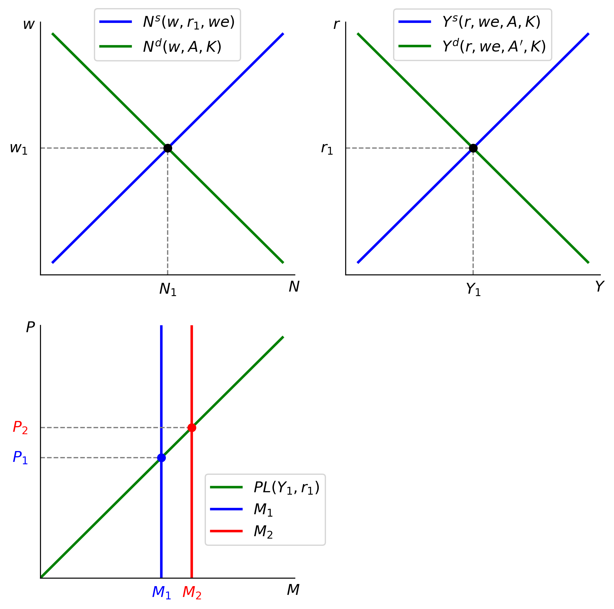
Obr. 19.15 Vplyv zvýšenia množstva peňazí na konkurenčnú rovnováhu#
- Klasická dichotómia
oddelenie reálnych a nominálnych premenných v ekonomike. Reálne premenné sú určené rovnováhou na trhoch práce a produktov, zatiaľ čo cenová hladina je určená rovnováhou na trhu peňazí. Zmeny nominálnych premenných, ako sú množstvo peňazí alebo cenová hladina, neovplyvňujú reálne premenné ekonomiky.
Na trhu peňazí platí
Keďže sa výstup \(Y\) ani reálna úroková miera \(r\) nemenia, zvýšenie ponuky peňazí o 1 % spôsobí, ceteris paribus, zvýšenie cenovej hladiny o 1 %.
Reálne premenné \(Y,\ r,\ N,\ w,\ C,\ I,\ G,\ L(Y,r)\) sa nezmenia.
Nominálne premenné \( PY,\ Pw,\ PC,\ PI,\ PG,\ M\) sa zvýšia v rovnakej proporcii, v akej sa zvýši množstvo peňazí v obehu. Peňažná elasticita nominálnych premenných sa rovná \(1\).
- Neutralita peňazí
zmena množstva peňazí nemení reálne ekonomické premenné, ale iba nominálne premenné.
Z krátkodobého hľadiska mnohí ekonómovia predpokladajú, že peniaze nie sú neutrálne.
Neutralita peňazí sa zvyčajne predpokladá z dlhodobého hľadiska.
Podľa týchto teórií môžu zmeny množstva peňazí v krátkom období ovplyvňovať aj reálne ekonomické premenné. Neskôr (Súčasné keynesovské modely: nepružné ceny) predstavíme keynesovský model, v ktorom zmena ponuky peňazí krátkodobo ovplyvňuje výstup, zamestnanosť a ďalšie reálne premenné ekonomiky.
19.7. Vplyv zmeny peňažného dopytu#
Ak sa zvýši dopyt po peniazoch, na Obr. 19.16 krivka dopytu sa posunie doprava zo zelenej do tmavomodrej čiary. Pri nezmenenom množstve peňazí, klesne cena výstupu.
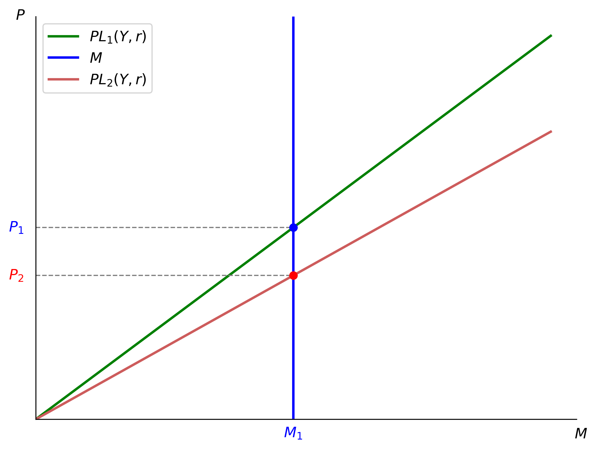
Obr. 19.16 Vplyv zvýšenia množstva peňažného dopytu na cenu výstupu#
Čo spôsobuje pohyby peňažného dopytu?
Technologické zmeny (šeky, debetné a kreditné karty, internet banking, mobilné platby a pod.) znižujú potrebu držby hotovosti a tým aj dopyt po peniazoch.
Finančné inovácie, napríklad sweep accounts, automaticky presúvajú nevyužité zostatky na úročené účty. Uľahčujú správu finančných prostriedkov a znižujú potrebu držby neúročeného obeživa, čo znižuje dopyt po peniazoch.
Zmeny regulácie finančného sektora môžu znižovať náklady poskytovania bankových služieb. Lacnejšie a dostupnejšie bankové služby znižujú potrebu držby hotovosti a tým aj dopyt po peniazoch.
Zmeny vnímanej rizikovosti bankových vkladov ovplyvňujú rozdelenie majetku medzi hotovosť a vklady. Čím bezpečnejšie sa javia bankové vklady, tým menší je dopyt po obežive.
Spoľahlivosť a kapacita platobného systému ovplyvňuje ochotu používať bezhotovostné platby. Čím rýchlejšie, lacnejšie a spoľahlivejšie funguje bankový systém, tým menší je dopyt po hotovosti.
Vo vyspelých ekonomikách možno od 80. rokov 20. storočia pozorovať výrazný rozvoj platobných technológií, finančných inovácií a elektronického bankovníctva. Dôsledkom boli opakované posuny funkcie dopytu po peniazoch doľava, keďže domácnosti a firmy dokázali realizovať rovnaký objem transakcií pri menšej držbe obeživa.
19.8. Konvenčná menová politika, pasca likvidity a nekonvenčná menová politika#
19.8.1. Konvenčná menová politika#
Tvorba menovej politiky sa historicky často mení. Uveďme najskôr krátku históriu modernej menovej politiky:
Koncom 70. a začiatkom 80. rokov sa pri tvorbe menovej politiky kládol dôraz na kontrolu rastu peňažnej zásoby. Monetaristi na čele s Miltonom Friedmanom tvrdili, že stabilný rast množstva peňazí umožňuje dosiahnuť stabilnú infláciu. Guvernér FED-u Paul Volcker sa v boji s vysokou infláciou začiatkom 80. rokov opieral o cielenie peňažných agregátov.
Počas 80. a 90. rokov sa ukázalo, že dopyt po peniazoch nie je dostatočne stabilný. Rozvoj nových finančných nástrojov, elektronického bankovníctva a zmien regulácie spôsoboval významné posuny funkcie dopytu po peniazoch. Väčšina centrálnych bánk preto prešla od cielenia peňažných agregátov k cieleniu krátkodobých nominálnych úrokových mier.
19.8.2. Pasca likvidity#
Doteraz sme pod peniazmi rozumeli obeživo držané verejnosťou. Pri analýze pasce likvidity však musíme uvažovať širší pojem likvidity. Ak sa nominálna úroková miera približuje k nule, rozdiel medzi obeživom a krátkodobými štátnymi dlhopismi sa stiera. Obe aktíva poskytujú prakticky rovnaký výnos a stávajú sa blízkymi substitútmi.
Politika cielenia nominálnej úrokovej miery má prirodzené ohraničenie. Ak sa nominálna úroková miera priblíži k nule, ďalšie znižovanie sadzieb stráca účinnosť. Domácnosti môžu namiesto dlhopisov držať hotovosť, ktorej nominálna úroková miera sa rovná nule.
Ak sa nominálna úroková miera úročených aktív rovná nule, hotovosť a krátkodobé štátne dlhopisy sa stávajú dokonalými substitútmi. Spotrebiteľ je indiferentný medzi držbou hotovosti a držbou dlhopisov, pretože obe aktíva prinášajú rovnaký nominálny výnos.
V takomto prípade možno ponuku peňazí nahradiť ponukou nominálnej likvidity \(M+B\), kde \(B\) predstavuje likvidné krátkodobé vládne dlhopisy. Pri nulovej nominálnej úrokovej miere je dopyt po reálnych peňažných zostatkoch daný funkciou \(L(Y,0)\)
Rovnováha na trhu likvidity nastáva pri podmienke
Pri danej úrovni výstupu \(Y\) táto podmienka určuje rovnovážnu cenovú hladinu \(P^*\).
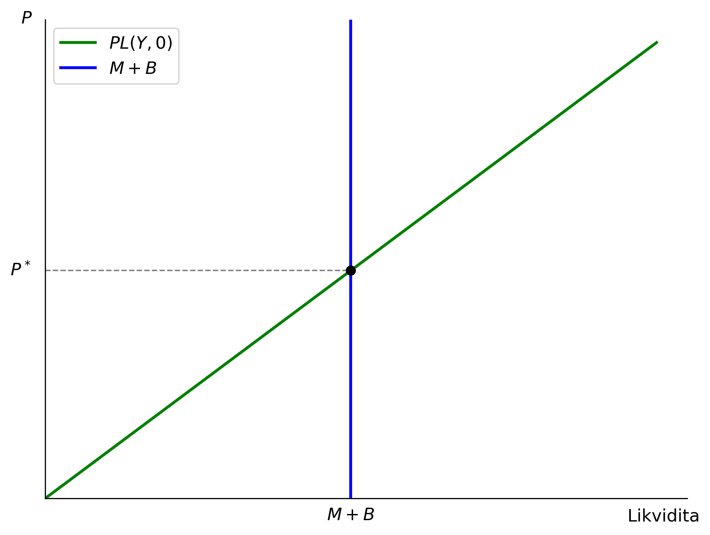
Obr. 19.17 Pasca likvidity#
Predpokladajme, že pri nulovej úrokovej miere sa centrálna banka rozhodne prostredníctvom operácie na voľnom trhu zvýšiť množstvo peňazí. Nakúpi vládne dlhopisy za novovytvorené peniaze, čím sa zvýši množstvo peňazí \(M\) a súčasne zníži množstvo dlhopisov držaných verejnosťou \(B\).
Pri nulovej úrokovej miere sú však peniaze a krátkodobé vládne dlhopisy dokonalými substitútmi. Zvýšenie množstva peňazí je preto plne kompenzované poklesom množstva dlhopisov držaných verejnosťou, takže celková ponuka likvidity \(M+B\) sa nezmení.
Keďže sa nezmení ponuka likvidity, nezmení sa ani rovnovážna cenová hladina \(P^*\). Operácie na voľnom trhu preto pri nulovej úrokovej miere strácajú schopnosť ovplyvňovať ekonomiku.
- Pasca likvidity
situácia, v ktorej sú nominálna úroková miera a výnos likvidných dlhopisov tak nízke, že peniaze a dlhopisy sa stávajú dokonalými substitútmi a konvenčná menová politika prostredníctvom operácií na voľnom trhu prestáva byť účinná.
Na možnosť vzniku pasce likvidity upozornil John Maynard Keynes vo svojej knihe The General Theory of Employment, Interest and Money [Key36].
V období od globálnej finančnej krízy rokov 2008 až 2009 až po pandémiu COVID‑19 sa mnohé centrálne banky nachádzali v prostredí veľmi nízkych alebo nulových úrokových mier. Keďže konvenčné znižovanie úrokových sadzieb už nebolo možné, snažili sa ďalej uvoľňovať menovú politiku prostredníctvom nekonvenčných nástrojov.
19.8.3. Nekonvenčná menová politika#
K nekonvenčnej menovej politike patria nástroje ako kvantitatívne uvoľňovanie a záporné úrokové sadzby.
Kvantitatívne uvoľňovanie (quantitative easing). Centrálna banka zvyšuje množstvo peňazí nákupom dlhodobých a menej likvidných finančných aktív namiesto krátkodobých štátnych dlhopisov. Pri takýchto operáciách sa ponuka likvidity zvyšuje, pretože verejnosť drží viac peňazí a menej dlhodobých cenných papierov. Programy kvantitatívneho uvoľňovania realizovali napríklad Federálny rezervný systém, Bank of England, Bank of Japan a ECB. Ich účinnosť je predmetom diskusie, keďže inflácia sa v mnohých krajinách dlhodobo pohybovala pod inflačnými cieľmi centrálnych bánk.
Záporné úrokové miery. Mnohí ekonómovia predpokladajú, že efektívna spodná hranica nominálnych úrokových mier je nižšia ako nula, pretože držba veľkého množstva hotovosti je spojená s nákladmi a rizikami. Domácnosti a firmy preto môžu akceptovať mierne záporné úrokové miery namiesto držby veľkého objemu hotovosti. Niektoré centrálne banky, vrátane ECB, Švajčiarskej národnej banky a Bank of Japan, preto počas určitého obdobia používali záporné úrokové sadzby. Ich cieľom bolo podporiť dopyt a zvýšiť infláciu smerom k inflačnému cieľu.
Cieľom záporných úrokových mier bolo podporiť ekonomickú aktivitu a zvýšiť infláciu. Nie všetci ekonómovia však súhlasia s tým, že nižšie nominálne úrokové miery vedú k vyššej inflácii. Alternatívny pohľad predstavuje neofisherovský efekt, ktorému sa budeme venovať neskôr.
Nekonvenčná menová politika ECB
Po globálnej finančnej kríze v roku 2008 ECB postupne znižovala svoje kľúčové úrokové sadzby. Keď sa nominálne úrokové sadzby priblížili k nule, centrálna banka začala využívať nekonvenčné nástroje menovej politiky. Jedným z nich boli záporné úrokové sadzby, ktoré sa v eurozóne prejavili zápornou hodnotou trojmesačného Euriboru v rokoch 2015 až 2022. Podľa Obr. 19.5 sa napriek tomuto uvoľneniu menovej politiky infláciu dlhodobo nedarilo stabilne udržať na cieľovej úrovni 2 %.
ECB popri záporných úrokových sadzbách využívala aj programy kvantitatívneho uvoľňovania. Tie sa prejavili výrazným rastom peňažných agregátov M1 a M3, ktorý prevyšoval rast reálnej ekonomickej aktivity. Vývoj oboch agregátov je zobrazený na Obr. 19.2.
Na Obr. 19.7 sú zobrazené cyklické zložky reálneho HDP a peňažného agregátu M1. Počas období kvantitatívneho uvoľňovania, najmä po roku 2015 a počas pandémie COVID-19, sa M1 nachádzal výrazne nad svojím dlhodobým trendom, zatiaľ čo HDP vykazoval podstatne menšie odchýlky. Rast peňažnej zásoby tak v tomto období prevyšoval rast reálnej ekonomickej aktivity.
19.9. Riešený príklad: Dynamický model všeobecnej rovnováhy s peniazmi#
V príklade využijeme nasledovné balíčky:
from scipy.optimize import fsolve
import numpy as np
Aby sme mohli využiť model vyvinutý v príklade Príklad: Dynamický model všeobecnej rovnováhy v jazyku Python, stačí pridať rovnicu rovnováhy na trhu peňazí.
Predpokladajme nasledovný funkčný tvar peňažného dopytu
kde \(\kappa>0\) je elasticita transakčného dopytu po peniazoch (príjmová elasticita dopytu), \(\lambda<0\) je elasticita špekulačného dopytu po peniazoch (úroková elasticita dopytu). Parameter \(\gamma\) zachytáva inštitucionálne a technologické faktory ovplyvňujúce dopyt po peniazoch, ako sú rozvoj platobných technológií, preferencie držby likvidity alebo regulácia finančného sektora.
Konkurenčnú rovnováhu (Konkurenčná rovnováha) rozšírime o rovnicu rovnováhy na trhu peňazí
kde \(M\) je exogénna ponuka peňazí, cena výstupu \(P\) je endogénna.
Hodnotu parametra \(\gamma\) môžeme kalibrovať tak, aby v konkurenčnej rovnováhe \(P=M=1\).
Pri dodržaní pravidla kalibrácie z predchádzajúcej časti \(Y=1,r=\alpha-\delta\) v rovnováhe platí:
Po úprave
Zvoľme hodnoty elasticít dopytu po peniazoch
a
Empirické odhady elasticít dopytu po peniazoch
Zvolené hodnoty parametrov slúžia na ilustráciu modelu a nemajú predstavovať empirické odhady dopytu po peniazoch.
V empirickej literatúre sú časté odhady elasticít dopytu po peniazoch:
príjmová elasticita \(\kappa\) blízko 1,
úroková elasticita \(\lambda\) približne medzi −0,3 až −0,7.
Hoffman a Rasche napríklad odhadujú dlhodobú úrokovú elasticitu dopytu po M1 približne −0,5 až −0,6 a nedokážu zamietnuť hypotézu jednotkovej príjmovej elasticity [HR91].
Vytvorme všetky potrebné funkcie, kalibrované hodnoty parametrov a vypočítajme konkurenčnú rovnováhu.
def ppr(endog):
C, Cp, l, lp, N, Np, Y, Yp, I, Ip, Kp, w, wp, r, P = endog
# ÚPRAVA oproti pôvodnému modelu, pribudla endogénna premenná P
return (
C/l - w,
Cp/lp - wp,
Cp/(beta*C) - (1+r),
(1-alpha)*A*K**alpha*N**(-alpha) - w,
(1-alpha)*Ap*Kp**alpha*Np**(-alpha) - wp,
alpha*Ap*Kp**(alpha-1)*Np**(1-alpha) - delta - r,
Y - A*K**alpha*N**(1-alpha),
Yp - Ap*Kp**alpha*Np**(1-alpha),
I - (Kp - (1-delta)*K),
Ip - delta*Kp,
C + I + G - Y,
Cp + Ip + Gp - Yp,
N + l - h,
Np + lp - h,
M/P - Y**kappa * gamma * r**lam # ZMENA rovnováha na trhu peňazí
)
def percent_zmena(pred, po):
return 100 * (po - pred) / pred
def napis_odpoved(text,ge_new):
ge_change = percent_zmena(ge,ge_new)
print(text)
print("Spotreba", round(ge_change[0],4))
print("Práca", round(ge_change[4],4))
print("Výstup", round(ge_change[6],4))
print("Mzdová sadzba", round(ge_change[11],4))
print("Investície", round(ge_change[8],4))
print("Úroková miera", round(ge_change[13],4))
print("Cena výstupu", round(ge_change[14],4))
A = 1.
Ap = 1.
alpha = 1/3
delta = 0.1
G = 1/4
Gp = 1/4
K = 1.
M = 1.
kappa = 0.5
lam = -0.5
beta = 1 / (1 + alpha - delta)
h = (1-G-delta)/(1-alpha) + 1
gamma = (alpha-delta)**(-lam)
ge = fsolve(
ppr,
(1-delta-G, 1-delta-G, h-1, h-1, 1., 1.,1., 1.,delta,
delta,1.,1-alpha,1-alpha,alpha-delta,1)
)
#zobraz výsledky
print("Konkurenčná rovnováha")
print("Spotreba v prvom období", round(ge[0],2), "v druhom", round(ge[1],2))
print("Práca v prvom období", round(ge[4],2), "v druhom", round(ge[5],2))
print("HDP v prvom období", round(ge[6],2), "v druhom", round(ge[7],2))
print("Investície v prvom období",round(ge[8],2), "v druhom", round(ge[9],2))
print("Mzdová sadzba v prvom období", round(ge[11],2), "v druhom", round(ge[12],2))
print("Úroková miera", round(ge[13],2))
print("Cena výstupu", round(ge[14],2))
Konkurenčná rovnováha
Spotreba v prvom období 0.65 v druhom 0.65
Práca v prvom období 1.0 v druhom 1.0
HDP v prvom období 1.0 v druhom 1.0
Investície v prvom období 0.1 v druhom 0.1
Mzdová sadzba v prvom období 0.67 v druhom 0.67
Úroková miera 0.23
Cena výstupu 1.0
Konkurenčná rovnováha zodpovedá našim predpokladom, cena výstupu sa rovná 1. Môžeme prejsť na numerickú analýzu vplyvov posunu ponuky a dopytu peňazí.
19.9.1. Vplyv zvýšenia ponuky peňazí#
Preskúmajme vplyv zvýšenia ponuky peňazí o 1 %, ceteris paribus, na konkurenčnú rovnováhu.
M=1.01
ge_m=fsolve(ppr,ge)
napis_odpoved("Percentuálne zmeny endogénnych premenných "
"spôsobene 1% zmenou ponuky peňazí, *ceteris paribus*",
ge_m)
M=1.
Percentuálne zmeny endogénnych premenných spôsobene 1% zmenou ponuky peňazí, *ceteris paribus*
Spotreba 0.0
Práca -0.0
Výstup -0.0
Mzdová sadzba -0.0
Investície -0.0
Úroková miera 0.0
Cena výstupu 1.0
Ak sa ponuka peňazí zvýši o 1 %, ceteris paribus, cena výstupu sa zvýši o 1 %. Reálne endogénne premenné zostanú nezmenené.
19.9.2. Vplyv zmeny dopytu po peniazoch#
Parameter \(\gamma\) zachytáva inštitucionálne a technologické faktory ovplyvňujúce dopyt po peniazoch. Ak sa zvýši parameter gamma, zvýši sa dopyt po peniazoch.
percento_z_gamma = gamma/100
gamma=gamma+percento_z_gamma
ge_gamma=fsolve(ppr,ge)
napis_odpoved("Percentuálne zmeny endogénnych premenných "
"spôsobene 1% zmenou parametra gamma, *ceteris paribus*",
ge_gamma)
gamma=gamma-percento_z_gamma
Percentuálne zmeny endogénnych premenných spôsobene 1% zmenou parametra gamma, *ceteris paribus*
Spotreba 0.0
Práca -0.0
Výstup -0.0
Mzdová sadzba -0.0
Investície -0.0
Úroková miera 0.0
Cena výstupu -0.9901
Ak sa parameter \(\gamma\) zvýši o 1 %, ceteris paribus, cena výstupu sa zníži o 0,99 %. Reálne endogénne premenné zostanú nezmenené.
19.10. Neriešené príklady#
Dokážte, že ponuková elasticita ceny výstupu sa rovná \(1\) a dopytová elasticita ceny výstupu sa rovná \(-1\) a platí:
\[ \frac{\partial{P}}{\partial{M^s}} \frac{M^s}{P} = 1 \]a
\[ \frac{\partial{P}}{\partial{L}} \frac{L}{P} = -1 \]Využite dynamický model všeobecnej rovnováhy z riešeného príkladu (Riešený príklad: Dynamický model všeobecnej rovnováhy s peniazmi) na preskúmanie reakcií ceny výstupu na nesledovné šoky:
zvýšia súčasné vládne nákupy (fiškálny šok),
zníži stav predeterminovaného kapitálu (katastrofa),
zvýši súčasná celková produktivita faktorov (dobrá úroda),
zvýši budúca celková produktivita faktorov (optimistické správy),
zvýši úroková prirážka (finančný šok),
simultánne znížia ponuka a dopyt po práci (sektorový šok),
zníži ponuka práce (pandémia).